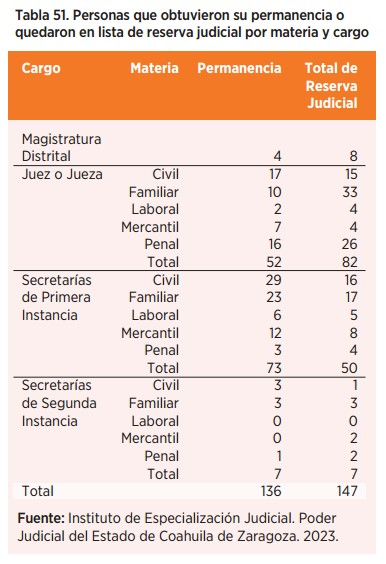

HOY, TODOS LOS CONCURSOS PARA ACCEDER A CARGOS JURISDICCIONALES SON PARITARIOS, BASADOS EN EL CONOCIMIENTO Y LOS MÉRITOS. ADEMÁS, FORTALECIMOS LA OFERTA ACADÉMICA PARA HACERLA INNOVADORA, ACTUALIZADA Y ACORDE A LAS NECESIDADES DE NUESTRO CAPITAL HUMANO Y TODA LA CIUDADANÍA INTERESADA

Para llevar la justicia de calidad a todas las personas se requiere una estructura profesional, capaz, íntegra, especializada y con sentido humano. Por eso, a través del Instituto de Especialización Judicial, desarrollamos un programa anual de capacitación y mejora continua, para brindar al personal conocimientos y habilidades que les permitan mejorar el desempeño de sus funciones y alcanzar altos estándares de calidad.
En el Poder Judicial reconocemos que la administración de una justicia sólida se afianza en el robustecimiento de una plantilla laboral actualizada, idónea para el ejercicio de las funciones que se le asigne, por eso, por primera vez en casi 10 años realizamos concursos de oposición, garantizando la selección de los perfiles más capacitados y en condiciones de igualdad, en un proceso transparente y con participación ciudadana.
En este apartado detallamos el trabajo que llevamos a cabo en 2023 para seleccionar a las personas que integran los órganos jurisdiccionales, privilegiando el mérito, los conocimientos, la capacitación, la igualdad de oportunidades, la paridad de género y la retención de talento, abonando así, a su profesionalización y mejora continua, para consolidar una nueva generación de magistradas, magistrados, juezas, jueces, secretarias, secretarios, notificadoras, notificadores, actuarias y actuarios, que contribuyan a garantizar el acceso a la justicia de todas las personas. Con el fin de promover las mejores vías para acercar a las y los ciudadanos a la resolución pacífica y satisfactoria de sus conflictos, mediante el Centro de Medios Alternos de Solución de Controversias (CEMASC), impulsamos la capacitación y certificación en mediación, para que personas en todos los ámbitos de la esfera pública, cuenten con herramientas para conciliar y solucionar conflictos y evitar así que estos lleguen a otra escala y que las personas tengan una justicia pronta y expedita mediante la construcción de acuerdos.
Asimismo, mediante la Unidad de Derechos Humanos e Igualdad de Género del Poder Judicial de Coahuila, elaboramos y actualizamos protocolos de actuación, los cuales deben observar las personas juzgadoras para garantizar el acceso a la justicia en condiciones de igualdad, de los grupos y colectivos que históricamente han sido vulnerados. Además, promovimos acciones y políticas públicas en materia de género para sentar las bases para la prevención, atención y sanción de los actos de violencia.
Estas acciones son una muestra de la vocación de servicio que identifica a todo el Poder Judicial de Coahuila.
INSTITUTO DE ESPECIALIZACIÓN JUDICIAL
Iniciamos un proceso de transformación para garantizar una impartición de justicia profesional, cercana y sensible a las inquietudes e intereses de las personas.
Este proceso conlleva la obligación de implementar mejoras decisivas en los procesos de ingreso, selección y profesionalización de todas las personas servidoras públicas que integran nuestra institución. Durante el 2023 mantuvimos los esfuerzos institucionales para garantizar una impartición de justicia con los más altos estándares de excelencia. Lo anterior, por medio de la ejecución de programas de capacitación y de la aplicación objetiva e imparcial del Examen de Méritos.
En colaboración con diversas instancias, trazamos dos ejes transversales dirigidos a: - Oferta académica especializada y continua. - Profesionalización integral de la función jurisdiccional (Examen de Méritos).
1. Oferta académica especializada y continua
Una de las condiciones que permiten a las personas operadoras de justicia practicar sus labores con los más altos estándares de calidad y eficiencia, es que cuenten con una capacitación adecuada, pues garantiza que sus actuaciones respondan efectiva y correctamente a los requerimientos del derecho.


En este sentido, es nuestra prioridad profesionalizar al personal del Poder Judicial, adoptando medidas para garantizar una capacitación permanente que sea accesible a todas las personas operadoras de justicia.
Durante 2023, realizamos 34 actividades académicas a través de nuestras instancias especializadas, con la participación de dos mil 580 personas. Del total de personas capacitadas, mil 562 pertenecen al Poder Judicial, 498 a otras dependencias gubernamentales y 520 a abogadas y abogados postulantes.

Estamos convencidos de que todas las personas operadoras de justicia necesitan asimilar nuevos conocimientos, destrezas y habilidades en diversas materias del derecho, por esta razón, realizamos el curso de capacitación en oralidad mercantil, en seguimiento a los lineamientos y estándares de implementación del Programa Nacional de Juicios Orales, elaborado por la Comisión Nacional de Mejora Regulatoria (CONAMER), donde participaron juezas, jueces, secretarias, secretarios, personal actuarial, trabajadores de la Visitaduría Judicial General y auxiliares administrativos.
Asimismo, impartimos formación jurídica sobre conciliación en materia laboral con el objetivo de dar a conocer lo establecido en la Ley Federal del Trabajo e impartimos el taller sobre derecho colectivo, con el propósito de analizar desde un enfoque crítico y práctico el Nuevo Sistema de Justicia Laboral.
También, realizamos el seminario sobre el juicio oral familiar, dirigido a personas operadoras de justicia, comunidad jurídica y sociedad civil, a fin de realizar análisis de aspectos relevantes del juicio oral, establecidos en el Código de Procedimientos Familiares del Estado de Coahuila.
En materia penal, ofrecimos preparación concerniente a las particularidades en el proceso penal acusatorio y oral, para profundizar sobre los elementos procesales que se desarrollan conforme al Código Nacional de Procedimientos Penales, así como en las directrices establecidas por la Suprema Corte de Justicia de la Nación.

Por otra parte, en coordinación con el Instituto de Estudios y Capacitación Jurídica (INDECAJ) llevamos a cabo la conferencia sobre la valoración de los dictámenes periciales, dirigida a personal jurisdiccional en materia penal, con el objetivo de mejorar la toma de decisiones en aquellos casos que involucren pruebas periciales.
También, desarrollamos capacitación dirigida a abogadas y abogados postulantes, sobre la prueba y su valoración en el proceso civil, familiar y mercantil, a fin de que conocieran los requerimientos para incorporar las pruebas al proceso y reflexionar respecto a los esquemas de motivación y valoración de las mismas.
En el marco del Programa por la protección de personas, defensoras y periodistas, implementado por la Agencia de los Estados Unidos para el Desarrollo Internacional (USAID), magistrados, magistradas, jueces, juezas, secretarias, secretarios y personal administrativo participaron en la conferencia sobre el Uso e impacto del análisis de contexto como herramienta de investigación, fortaleciendo sus conocimientos en materia de prevención, protección y atención de casos de este grupo de población.
Asimismo, en coordinación con el Departamento de Justicia de los Estados Unidos (DOJ por sus siglas en inglés), impartimos el curso de Capacitación de Competencias de Audiencias de Juicio (CCT) dirigido a ministerios públicos, peritos, policías y analistas de la Fiscalía General del Estado, impartido por jueces y juezas en Materia Penal del Sistema Acusatorio y Oral, con el propósito de reforzar las acciones que las personas operadoras de justicia deben demostrar en audiencia de juicio para una técnica jurídica convincente, profesional y ética.
En una alianza estratégica con la Casa de la Cultura Jurídica de la Suprema Corte de Justicia de la Nación en Saltillo, llevamos a cabo diversas capacitaciones: Derechos de las personas con discapacidad; Juzgar con perspectiva de género; Juzgar con perspectiva de infancia; y Buenas prácticas inclusivas. En estas sesiones de formación participaron personas operadoras de justicia, con el objeto de continuar en la línea de acción por la igualdad y la no discriminación de todas las personas en el estado. Buscamos así lograr un mayor acceso a la justicia y revertir las desigualdades estructurales existentes.

Durante el 2023, continuamos con la impartición de la licenciatura en Derecho en la modalidad en línea, acción que beneficia a 264 personas que, al día de hoy, forman parte de la primera, segunda y tercera generación que cursa su educación profesional en la ciencia jurídica. Esta actividad se deriva de la alianza estratégica a través del convenio de colaboración entre el Poder Judicial, el Gobierno del Estado de Coahuila de Zaragoza, el Congreso del Estado, la Auditoría Superior del Estado, así como la Facultad de Contaduría y Administración en la Unidad Torreón de la Universidad Autónoma de Coahuila.
Asimismo, durante 2023, pusimos en marcha acciones de promoción y difusión de la cultura jurídica, para contribuir en la formación profesional de estudiantes en disciplinas relacionadas con la función jurisdiccional.
Por lo anterior y en el marco del convenio de colaboración entre este Poder Judicial y la Universidad La Salle Campus Saltillo, 27 estudiantes de la licenciatura en Derecho realizan sus prácticas profesionales en órganos jurisdiccionales en materia familiar y mercantil.
Tras la publicación del Nuevo Código Nacional de Procedimientos Civiles y Familiares el 7 de junio de 2023, dimos inicio formal a los trabajos para la próxima implementación del código.
Como primer punto, consideramos fundamental que las personas que laboran en los órganos jurisdiccionales conozcan el nuevo sistema de impartición de justicia civil y familiar. Por ello, en el mes de noviembre, iniciamos con jornadas de sensibilización en los distintos distritos judiciales. El objetivo es analizar el código, estudiarlo y despejar dudas sobre las disposiciones que habrán de aplicarse a más tardar en 2027.
Con estas acciones reafirmamos que somos un Poder Judicial que sabe adaptarse a las demandas sociales y que se compromete a la implementación efectiva de estas reformas y a la educación de la población sobre sus derechos bajo las nuevas leyes, pues estos cambios legislativos son un paso importante hacia la construcción de un Coahuila más inclusivo y equitativo.

2. Profesionalización integral de la función jurisdiccional
Es necesario contar con los mejores perfiles de personas juzgadoras que garanticen la paz y estabilidad social y aseguren condiciones de igualdad para el acceso de la justicia en el estado.
En este sentido, durante este año en el Poder Judicial trabajamos para garantizar que todos los cargos se ocuparan por concurso y las personas tengan la certeza de desempeñar la encomienda para la que han sido seleccionadas.
Se trata de un proceso muy relevante para la consolidación de una verdadera carrera judicial profesional, fundamentada en el mérito, la igualdad de oportunidades y con perspectiva de género.
Uno de los principales objetivos que buscamos con esta transformación de la carrera judicial, es que las personas que ingresen y asciendan cuenten con competencias y habilidades necesarias para desempeñar su labor con sensibilidad social y pensamiento crítico.
Bajo este tenor, llevamos a cabo el proceso de Examen de Méritos 2023, convocando a personal de esta institución y a litigantes externos a participar en este proceso para obtener las titularidades y lista de reserva de los cargos de magistraturas distritales, juezas y jueces en materia civil, penal, familiar, mercantil y laboral, además de secretarias y secretarios.
Tras la convocatoria emitida el 3 de febrero de 2023 por el Consejo de la Judicatura, recibimos 542 solicitudes de inscripción, de las cuales 464 cumplieron con los requisitos establecidos para presentar este examen.

Siguiendo los principios de excelencia, objetividad, imparcialidad, profesionalismo e independencia, hemos conformado un Consejo Académico. Este consejo está integrado por autoridades jurisdiccionales, docentes de las principales universidades del estado, integrantes de barras, foros y colegios de abogacía, así como personas de la sociedad civil con amplios conocimientos del derecho y con solvencia profesional. Este consejo ha dado seguimiento a cada etapa de un proceso que constó de tres fases de evaluación.
La primera fase fue dividida en tres etapas. La primera etapa fue la evaluación escrita del grado de conocimiento sobre temas de derecho, perfil y competencias jurídicas necesarias para ejercer los cargos, esta evaluación constó de 120 reactivos y fue diseñada y aplicada por personal de la Universidad Iberoamericana de Torreón en las dos sedes establecidas. En Torreón, contamos con la participación de 141 sustentantes y en Saltillo con 323. Acreditando la misma un total de 363 sustentantes.

En la segunda etapa, las 363 personas que acreditaron el examen escrito de conocimientos, presentaron en modalidad virtual un caso práctico, a fin de evaluar el desempeño del cargo al que aspiran, en donde cada sustentante elaboró un proyecto de sentencia de un juicio. En dicha etapa, 294 sustentantes cumplieron con la calificación aprobatoria establecida por las comisiones designadas por el Consejo de la Judicatura.

La tercera etapa fue el examen oral para los cargos de magistraturas distritales y juezas y jueces, quienes fueron evaluados por distintas comisiones integradas por Magistraturas del Tribunal Superior del Poder Judicial del Estado de Coahuila, miembros de la sociedad civil y académicos expertos en la materia, en la cual presentaron 12 aspirantes para las magistraturas distritales y 134 para juezas y jueces.
Posteriormente, llevamos a cabo la segunda fase que constó de la evaluación de aptitudes, actitudes, capacidades y competencias psicológicas y vocacionales de las y los 283 aspirantes a magistraturas distritales, juezas y jueces, y secretarias y secretarios.
Finalmente, la tercera fase fue la valoración de méritos, que estuvo a cargo del Consejo de la Judicatura, a través del análisis de la formación académica y trayectoria profesional de quienes aprobaron las fases previas de las convocatorias, obteniendo como resultado la selección imparcial y objetiva de 136 funcionarias y funcionarios de carrera judicial que obtienen su permanencia en el cargo, cuatro magistrados distritales, 52 juezas y jueces, 73 secretarios de primera instancia y siete secretarios de segunda instancia.
Así, conformamos una lista de reserva judicial integrada por 147 personas, de las cuales 124 son funcionarias y funcionarios del Poder Judicial que aspiran a un puesto superior y 23 abogadas y abogados externos a la institución.

De la misma manera, llevamos a cabo el Examen de Méritos para obtener las titularidades y lista de reserva de los cargos de los cargos de actuaria y actuario, notificadora y notificador en materia civil, penal, familiar, mercantil y laboral.
En este proceso tuvimos un registro inicial de 285 personas aspirantes, de las cuales fueron admitidas 211 personas al examen de conocimientos, que fue diseñado y evaluado por la Universidad Iberoamericana de Torreón, en donde 144 sustentantes resultaron aprobados.
Posteriormente, concretamos la fase de examen oral, acreditada por 120 sustentantes que procedieron a presentar la evaluación de aptitudes, que constó de la valoración de habilidades, capacidades y competencias psicológicas y vocacionales.
Finalmente, 74 funcionarias y funcionarios de carrera judicial, obtuvieron su permanencia en el cargo, mientras que 46 personas conformaron la lista de reserva judicial.
SEMINARIO JUDICIAL
La profesionalización del personal jurisdiccional abona a la impartición de una justicia eficiente, transparente e imparcial.
Por dicha razón, el 19 de diciembre realizamos el Semanario Judicial 2023, en el que buscamos la actualización, mejora, intercambio de buenas prácticas del personal jurisdiccional del Poder Judicial, además de unificar la visión del Modelo de Justicia y Gestión Judicial.
El Seminario contó con la participación de las juezas y jueces de la entidad. A esa dinámica se sumaron las magistraturas integrantes del Pleno del Tribunal Superior de Justicia.
En esta actividad desarrollamos paneles, conferencias y mesas de trabajo donde se analizaron temas concernientes al nuevo Modelo de Justicia, capacitación y carrera judicial, actualización normativa, justicia digital, modelo de mediación y defensoría, litigación y valoración de la prueba en el Nuevo Código Nacional de Procedimientos Civiles y Familiares, y gestión judicial.
CAPACITACIÓN EN MEDIOS ALTERNOS DE SOLUCIÓN DE CONTROVERSIAS
La contribución de los Medios Alternativos de Resolución de Conflictos es invaluable debido a que ayudan a solventar crisis personales generadas con el diario acontecer de los hechos, al mismo tiempo que evitan al máximo posible la utilización de las vías jurisdiccionales.
Por tal motivo, en el Poder Judicial de Coahuila procuramos que no solo nuestros servidores públicos tengan conocimientos y técnicas en el manejo de los diferentes medios alternativos de solución de conflictos, sino que la ciudadanía en general pueda instruirse y capacitarse en la materia.


Como parte de ese compromiso, por medio del Centro de Medios Alternativos de Solución de Controversias (CEMASC), impartimos diversos cursos en materia de mediación y mediación escolar y comunitaria, los cuales contaron con la participación de 234 personas, entre los cuales destaca la asistencia de personal directivo, docente, alumnado de la Facultad de Jurisprudencia de la UAdeC, así como funcionarios y funcionarias estatales y municipales.
CERTIFICACIÓN EN MEDIACIÓN Y CONCILIACIÓN
La mediación y conciliación son herramientas capaces de fomentar relaciones sinérgicas y construir espacios comunes que coadyuven a reestablecer las relaciones, propicien propuestas y soluciones de futuro en el marco de la tolerancia y el respeto, por dicha razón, las y los servidores públicos a nivel estatal o municipal, así como las personas físicas que tienen el interés de desempeñarse en los servicios de mediación y conciliación, deben obtener la certificación respaldada por el Centro de Medios Alternos de Solución de Controversias (CEMASC) del Poder Judicial del Estado.
Esta certificación, integralmente estructurada, comprende tres evaluaciones: psicométrica, teórica y práctica. Estas evaluaciones están diseñadas para demostrar que las personas aspirantes poseen el perfil, conocimientos y habilidades apropiadas para llevar a cabo de manera efectiva estas medidas alternativas de solución de conflictos, las cuales se presentan como métodos autocompositivos para que las personas resuelvan sus discrepancias de manera autónoma.
En el año 2023 implementamos tres procesos ordinarios que delinean el protocolo estándar de certificación en mediación, junto con dos procesos extraordinarios, destinados a certificar tanto a servidores públicos a nivel estatal o municipal, como a profesionales del ámbito privado.
Como resultado de estos esfuerzos, 19 personas lograron obtener con éxito la certificación, validando su competencia a lo largo de cada una de las etapas correspondientes del proceso de certificación. Este logro no solo destaca la calidad de los certificados, sino también la dedicación y capacidad de aquellos que han demostrado su compromiso con la materia.
UNIDAD DE DERECHOS HUMANOS E IGUALDAD DE GÉNERO
La Unidad de Derechos Humanos e Igualdad de Género, adscrita a la Secretaría Técnica y de Transparencia, es el área administrativa encargada de realizar acciones encaminadas a vigilar que se respeten los Derechos Humanos y se incorpore la perspectiva de género en las labores jurisdiccionales y administrativas del Poder Judicial del Estado de Coahuila.
En trabajo colaborativo con las integrantes de la Comisión de Igualdad y No Discriminación del Congreso del Estado y el Ministerio de Justicia de Canadá, a través de la Cónsul General de Canadá en Monterrey, Sandra Shaddick, este año realizamos la presentación del proyecto de tipificación del delito de acecho para que no sea reducido a aspectos sexuales que ya contempla el acoso y el hostigamiento sexual.
Esta reforma jurídica busca impactar de manera importante en la prevención y el combate en específico del delito de acecho, delito de riesgo considerable y que puede prevenir la comisión de delitos más graves, como el feminicidio. Con esto es posible responder a desafíos sociales y de seguridad.


Asimismo, distintas áreas administrativas y jurisdiccionales del Poder Judicial participaron en el proyecto conjunto para la prevención y atención de la violencia contra las mujeres y niñas con distintas áreas de la Agencia de los Estados Unidos para el Desarrollo Internacional (USAID). A la par, sostuvimos reuniones con la titular del Instituto Estatal de la Mujer y ONU Mujeres para el desarrollo de la estrategia de protección de mujeres, niñas y adolescentes.
En el marco de la conmemoración del Día Internacional de la Mujer, llevamos a cabo el panel y presentación del libro “¿Inés: Rebelde o Valiente?” de la autora Margarita Castillo Laviada. Con este evento, buscamos visibilizar los actos de violencia de género.
Apegados a nuestro propósito de mejorar la comunicación con la ciudadanía, de dar a conocer nuestra conformación y difundir nuestra función primordial, pusimos en marcha el micrositio Justicia Para Ti, con el que buscamos realizar el primer acercamiento de la justicia para las niñas y niños del estado. Ahí se pueden encontrar elementos fundamentales y conocimientos generales sobre temas del Estado de Derecho en una etapa temprana.
Por dicha razón, en el micrositio brindamos materiales educativos que promuevan e inculquen valores como la aceptación, integridad, respeto, diálogo y la equidad, a través de actividades didácticas y divertidas apropiadas para el sector al que vamos encaminados, como sopa de letras, preguntas de verdadero o falso, completar frases, entre otras.
Para nosotros es fundamental realizar un trabajo preventivo, debido a las problemáticas que persisten en nuestro estado. Situaciones como los padres deudores alimentarios, los padres que pelean por una patria potestad y otras como la violencia sexual, e incluso casos de sustracción, afectan directamente a los grupos más vulnerables, como los niños, niñas y adolescentes.
Por otra parte, mantuvimos constante acercamiento con distintos colectivos del estado para escuchar sus problemáticas y crear líneas de trabajo y seguimiento. Uno de los colectivos con el que se realizaron diversas reuniones encabezadas por el Magistrado Presidente Miguel Felipe Mery Ayup, fue el de Colectivas Feministas de Saltillo, con quienes impulsamos una agenda conjunta de acceso a la justicia para las mujeres.
Asimismo, dimos seguimiento a los colectivos Incide Femme y Justicieras por Nuestras Infancias en Torreón, para brindar acompañamiento a las víctimas que cuentan con un proceso delicado en el Poder Judicial. Como parte de la atención integral brindada en las reuniones, contamos con la presencia de instituciones como el Instituto Estatal de Defensoría Pública del Poder Judicial del Estado, representantes de la Fiscalía General del Estado, de la Procuraduría para Niños, Niñas y la Familia (PRONNIF), de la Comisión Ejecutiva Estatal de Atención a Víctimas, del Centro de Justicia y Empoderamiento de la Mujer y de la Comisión de los Derechos Humanos del Estado de Coahuila.
Aunado a los colectivos ya mencionados, continuamente trabajamos con los siguientes colectivos de familias de personas desaparecidas: Alas de Esperanza, Búscame (Buscando Desaparecidos México), Caravana Internacional en Busca de Desaparecidos, Familias Unidas en la Búsqueda y Localización de Personas Desaparecidas A.C., Fuerzas Unidas Por Nuestros Desaparecidos en Coahuila-México (FUUNDEC-M), Rastreador@S Nacionales de Personas Desaparecidas (RANADES), Grupo Vida y Voz que Clama Justicia por Nuestros Desaparecidos.
También, mantuvimos trabajo de colaboración con diversas asociaciones en pro del interés superior de la niñez, por lo que fuimos partícipes del Foro Los Hijos del Divorcio, que tuvo por objetivo sensibilizar a servidores públicos y sociedad civil sobre las problemáticas que enfrentan niñas, niños y adolescentes en los procesos de separación de sus padres.


Además, nos reunimos con Diana Luz Vázquez, impulsora de la Ley Sabina, para discutir avances en el Estado de Coahuila sobre el pago de pensión alimenticia.
Dentro de las acciones realizadas con USAID y en coordinación con el Instituto de Especialización Judicial, llevamos a cabo el Panel Efectos de la Sentencia de la Corte Interamericana Digna Ochoa y Familiares vs México, enfocado en la defensa de personas defensoras de derechos humanos y periodistas. Además, sostuvimos una reunión de trabajo con el Director Adjunto de la Oficina de Gobernanza, Derechos Humanos y Seguridad Ciudadana de USAID México, para definir los pasos siguientes a dar en colaboración con el área de defensores de derechos humanos y periodistas de USAID.
Como parte de nuestras tareas se encuentra la sensibilización en diversos rubros, por lo que este año dirigimos cursos en derechos humanos y perspectiva de género. Bajo esta línea ofertamos una capacitación a juezas y jueces de Saltillo en materia de Enfoque de Género e Inclusión Social con el taller Aplicación de la Perspectiva de Género y Enfoque GESI en la Administración de Justicia, impartido por USAID México y el Instituto de Justicia Procesal Penal, A.C.
Finalmente, desarrollamos diversas campañas en redes sociales para sensibilizar y concientizar sobre la violencia contra la mujer. Entre las publicaciones que compartimos se encuentran obras audiovisuales que retratan y visibilizan las situaciones de violencia que atraviesan las mujeres y en consecuencia las niñas, niños y adolescentes. Aunado a lo anterior, en el marco de los 16 días de activismo contra la violencia de género, publicamos información importante sobre los distintos tipos de violencia de género que existen, para crear conciencia y promover el cambio entre la ciudadanía coahuilense.
RECURSOS HUMANOS
Todo el trabajo de transformación en un Poder Judicial profesional y cercano tiene respaldo en la Dirección de Recursos Humanos que dirige, organiza y cubre las necesidades de personal requerido en las áreas que conforman este poder público, que prioriza el bienestar y desarrollo de las personas que laboran en la institución.

Este año la plantilla laboral del Poder de Coahuila está conformada por mil 884 empleados, de los cuales mil 200 son mujeres y 684 son hombres. De la totalidad de las plazas, las mujeres ocupan el 63.7 por ciento del total de la institución y los hombres el 36.3 por ciento. Estos números son resultado de los esfuerzos que hemos realizado para impulsar la igualdad de género en los cargos que conforman este poder público.
MOVIMIENTOS DE PERSONAL
En 2023, realizamos un total de 669 movimientos de personal, clasificados de la siguiente manera: cinco magistrados distritales, 78 juezas y jueces de primera instancia, 146 secretarias y secretarios, 138 actuarias y actuarios en sus distintas categorías, 34 defensores y defensoras o asesoras y asesores Jurídicos y 268 de personal administrativo sustantivo y de apoyo. Con estos movimientos garantizamos las suplencias requeridas y cubrimos las necesidades de personal presentadas en los distintos órganos jurisdiccionales y áreas administrativas
REESTRUCTURACIÓN DE ÓRGANOS JURISDICCIONALES, NO JURISDICCIONALES Y ADMINISTRATIVOS
Con el fin de realizar una distribución interna acorde a las demandas de justicia en todas las materias, en el Poder Judicial, realizamos la distribución y reacomodo del personal, considerando las necesidades que las áreas jurisdiccionales y administrativas presentaban y el perfil, habilidades y conocimientos de las y los funcionarios.
Actualmente, nuestra plantilla está distribuida de la siguiente manera: el 89 por ciento se desempeña en el área jurisdiccional y el 11 por ciento restante en áreas administrativas.
CREACIÓN DE ÓRGANOS
Para responder a las demandas de la ciudadanía y fortalecer la impartición de justicia, este año aprobamos la creación del Juzgado Sexto de Primera Instancia con especialización en materia hipotecaria en el Distrito Judicial de Torreón. Con este juzgado, las y los coahuilenses cuentan con jueces que tienen la sensibilidad del bien en conflicto, además representan una figura equilibrada entre el deudor y la institución financiera.

También creamos el Juzgado de Primera Instancia Auxiliar en Materia Civil en el Estado, que representará un apoyo en la descentralización de la carga de trabajo y facilitará así el acceso a la justicia.
Por otra parte, con el firme propósito de abordar de manera integral las problemáticas familiares, este año implementamos la modalidad de Justicia Auxiliar Familiar en el Distrito Judicial de Saltillo. Esta modalidad busca brindar soluciones efectivas y conciliatorias en casos familiares, priorizando el bienestar de todas las partes involucradas, además de contribuir a desahogar la carga de trabajo en los juzgados familiares existentes.
Asimismo, con la incorporación de la materia hipotecaria, dimos lugar a la creación de una Central de Actuarios que preste auxilio de la función actuarial exclusivamente a los juzgados civiles hipotecarios del Distrito Judicial de Saltillo y Torreón, así como al juzgado auxiliar.
Además, este año fortalecimos la Central de Actuarios del Distrito Judicial de Saltillo, para garantizar el acceso a la justicia pronta y expedita, y agilizar la ejecución de resoluciones judiciales y asegurar el cumplimiento oportuno de los procesos legales.
Finalmente, durante 2023, realizamos la asignación de 16 plazas adicionales a los Tribunales Laborales para mejorar la eficiencia en la resolución de conflictos laborales, asegurando un acceso a la justicia más ágil y efectivo.

BENEFICIOS AL PERSONAL
Con el fin de brindar un instrumento de apoyo a la economía familiar de las y los servidores públicos del Poder Judicial del Estado, continuamos con el otorgamiento de préstamos personales con un interés bajo y facilidades de descuento por nómina, por lo que este año se autorizaron 672 préstamos por un monto de 24 millones 256 mil 484 pesos.
Asimismo, con el objetivo de que nuestro personal pueda proteger su salud, la de su familia y sus finanzas, continuamos otorgando facilidades para la contratación de un seguro de gastos médicos mayores o de seguro de vida a un precio preferencial, facilitando su pago mediante descuento en nómina.